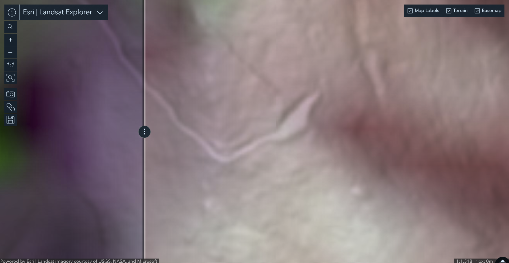

Lab 03 · September 2026
Entry 3: Soberanes Fire
The question
How much land burned in California’s 2016 Big Sur Soberanes Fire?
The data
Map Layer: Soberanes_Perimeter Polygon Layer
Map Layer Link: https://services2.arcgis.com/j80Jz20at6Bi0thr/arcgis/rest/services/Soberanes_Perimeter/FeatureServer/0
Last Updated: January 27, 2017 at 8:34pm
Author: Teach_with_GIS
Esri Landsat Explorer App: All missions included, Acquisition Dates 06/20/2016 & 10/26/2016, Renderer set to Short-wave IR
Landsat Level-2 Layer Link: https://www.arcgis.com/home/item.html?id=bd6b545b95654d91a0b7faf7b5e010f5#overview
Elevation Layer: ArgGIS Terrain3D
Elevation Layer Link: https://elevation3d.arcgis.com/arcgis/rest/services/WorldElevation3D/Terrain3D/ImageServer
Limitations Found: coordinate system (found from service definition) was EPSG 3857 or WGS 84/Pseudo-Mercator, geometry includes 686 rings which are smaller than a Landsat resolution cell of 900 square meters
The method
Map Viewer: Arcade expression was added to Sobranes_Perimeter layer, and is defined below. Area planar is measured with Cartesian arithmetic using Web Mercator, while Area geodetic uses the actual WGS 84 ellipsoid frame. Elevation differences were compared to three geoid models: EGM2008, EGM96, and EGM84.
// Two ways to measure one polygon.
var planar = Area($feature, 'square-kilometers');
var globe = AreaGeodetic($feature, 'square-kilometers');
var acres = AreaGeodetic($feature, 'acres');
return 'planar ' + Round(planar, 3) + ' km2'
+ TextFormatting.NewLine
+ 'geodetic ' + Round(globe, 3) + ' km2'
+ TextFormatting.NewLine
+ 'geodetic ' + Round(acres, 0) + ' acres'
+ TextFormatting.NewLine
+ 'ratio ' + Round(planar / globe, 4);
Landsat Explorer: Map was set to SWIPE mode, comparing two scenes from 06/20/2016 and 10/26/2016 of the burned fire in Big Sur (coordinates 36.32617, -121.72177).
Scene Viewer: Sobranes_Perimeter layer was added to Scenes, and angled to show terrain formation. Elevation Profile tool was used to determine an average slope of terrain, which was used to calculate a range of burned area.

What I found
The burned area given in the original layer was an outlier at over 800 square km, while other measurements and calculations reflected closer to around 500 square km. using different frames results in different calculated and measured values. For example, having the Web Mercator projection skews based on angles and latitude, by a factor of sec(phi) for perimeter and sec(phi) squared for areas. Changing pixel resolution on the Landsat Explorer app increases boundary undercertainties, which can have little effect on area measurements, yet greatly skew perimeter measurements. There is another discrepancy of estimating burned area due to the fact that the map and projections are 2D displays. The real world exists with 3D features, so by factoring in elevation heights and slopes on the Scene Viewer, we find that the burned area could also exist within a range of values.
When publishing, I would likely use the geodetic measurements, and be sure to note the pixel resolution given. Measuring using Web Mercator projection produces an outlier and heavily inflated value, whereas the rest of the incident historical figures are based on geodetic models. Changing the resolution to measure perimeter will also result in skewed measurements, due to uncertainties in how the boundaries are defined.
What this does not show
Measuring on different projections/frames comes with limitations on consistency. For example, a resolution limit is set when measurements do not match the given pixel resolution of what the original data sensor recorded. They must be generalized to a minimum of the spatial resolution, which leads to errors especially in length, but not area. Factoring in elevation and terrain, the measurement must now include an entire 3D surface area, rather than a 2D projection on flat ground. Calculating based on average slopes leads to a range on the lower side of the actual burned area, because steeper slopes inflate extra compared to flatter slopes. Correcting for heights requires using geoid models, of which there are many. In this lab, EGM2008, EGM96, and EGM84 were compared, and even these models had a spread of values across one region. Depending on which model is used, the measured heights could be different up to around 2m.
AI use: No AI tools were used for this entry.